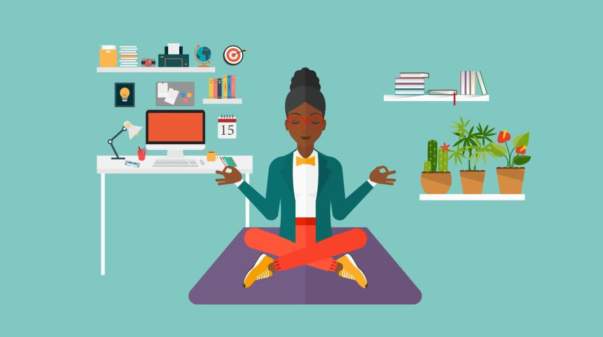

{% extends "base.html" %}
{% block content %}

Меняя привычки, мы меняем свою жизнь. Сделать это легко только на словах.

Чтобы добиться стойких изменений, не нужно приносить больших жертв, достаточно просто подойти с научной точки зрения и прислушаться к опыту тех, кому это удалось.
От твоих привычек зависит многое. Действия, которые ты каждый день совершаешь автоматически, определяют всю твою жизнь в целом. Чтобы идти верным курсом, нужно лишь выработать правильную манеру поведения и постоянно ее придерживаться.
Учеными доказано, что привычка формируется за 28-30 дней.
Это приложение поможет создать привычку и следить за соблюдением на протяжении всего периода ее формирования.
Если хочешь улучшить свою жизнь и завести множество полезных привычек - жми "зарегистрироваться". Уже улучшаешь себя - нажимай "войти"